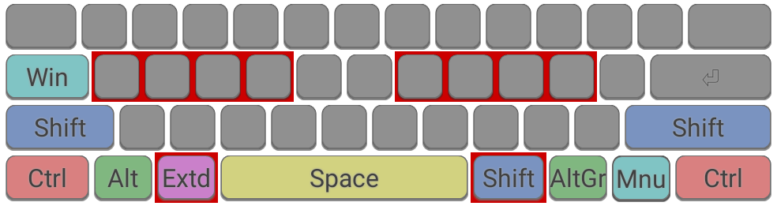

Ergonomic Keyboard Mods
Optimized Modifier Keys
This page discusses improved usage of modifier keys - Shift, Alt, Ctrl, Extend, Win/Super/Command, and CapsLock.
Amongst the many flaws in the standard keyboard design is the large spacebar in centre of the keyboard, with most modifiers offset to the extreme left and right. Frequently needed modifier keys are good candidates as "thumb keys" - if the key is readily accessible with a thumb, it is comfortable and easy to hold a key with the thumb while using fingers to press a secondary key.
The best-placed modifier keys on most keyboards are the keys either side of the spacebar - the Alt keys on a Windows/Linux PC or the Command keys on a Mac. The next best is probably the CapsLock key, being on the home row albeit via a weak finger (pinky). Many users remap CapsLock to something more useful such as Extend, Backspace, or Control.

The modifier keys on a standard keyboard. The home keys and best-placed thumb modifiers are highlighted in red.
For most people, the most commonly needed modifier is the Shift key. The standard way of typing shifted characters - using one hand to move diagonally down to hold shift while a finger on the other hand reaches for another key - is far from satisfactory for such a frequent action. Shift would be much better served on a very accessible key, preferably operated using a thumb. For users of the Extend Layer, this key should also be in a high priority position.
With these goals in mind, presented here are suggested alternative arrangements to common modifier keys:

The thumb-modifiers are set to Shift and AltGr, and an Extend key is defined on CapsLock. The left Alt moves one place to the left, similar to its position on a Mac. This setup would be well suited for those who rely on the AltGr key to type accented characters/symbols, especially if using a Symbols Layer.

The thumb-modifiers are set to Extend and Shift. For users of Extend, this makes the two most commonly needed modifiers the most accessible. The two Alt keys are moved outward, similar to their positions on a Mac. The Win/Super key is moved to CapsLock to ensure it remains available on all keyboards.

A variant of the previous configuration, again the thumb-modifiers are set to Extend and Shift. A different arrangement for the Left Alt and Windows keys is used.

If you source a keyboard with a split space bar, (e.g Ergo Pro, UHK), it becomes possible to use one half of the spacebar as an extra modifier. In this example, the left half of the spacebar is remapped to Shift. Other useful modifiers such as Extend and AltGr are also easily accessible via thumbs keys.
Note: These configurations work especially well in conjunction with the Wide Mod.
Resources
Software supporting remapping of modifier keys:AutoHotKey (Windows)
SharpKeys (Windows)
KMonad (Linux, Windows, Mac)